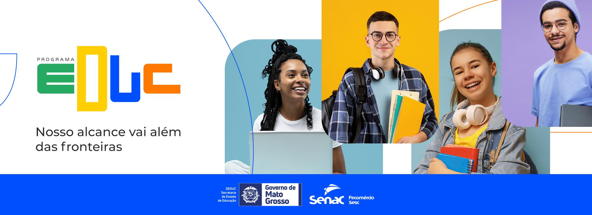

Sobre o SENAC
O Senac, Serviço Nacional de Aprendizagem Comercial, é uma instituição brasileira que desempenha um papel fundamental na educação profissional voltada para o setor comercial. Com uma missão de promover a capacitação e o desenvolvimento de competências, o Senac se destaca por sua abordagem prática e inovadora, visando atender às necessidades do mercado de trabalho.
A instituição oferece uma ampla variedade de cursos, que abrangem desde capacitações técnicas até especializações, nas mais diversas áreas, como comércio, serviços, turismo e tecnologia. Esses cursos são projetados para preparar os alunos para os desafios do mundo profissional, proporcionando uma formação sólida e atualizada.
Além da formação profissional, o Senac se envolve em programas de inclusão social e empreendedorismo, buscando oferecer oportunidades a diferentes grupos da sociedade. Com isso, contribui para a qualificação da mão de obra e o fortalecimento da economia local, ajudando a criar um ambiente mais dinâmico e competitivo.
Com diversas unidades espalhadas pelo Brasil, o Senac está presente em diferentes regiões, adaptando seus cursos e serviços às realidades locais. Essa presença estratégica permite que a instituição atenda de forma eficaz as demandas do mercado de trabalho e apoie o crescimento profissional dos seus alunos, promovendo não apenas o desenvolvimento individual, mas também o progresso social e econômico das comunidades onde está inserido.
Tópicos Relevantes
1. Quando Surgiu
2. Quem fundou
3. Finalidade para com a sociedade
4. Programa EDUC
Programa EDUC
O Programa Educ é uma iniciativa que resulta da parceria entre o Senac e o governo do estado, voltada para a promoção da educação profissional e técnica. Este programa tem como objetivo oferecer cursos de formação, qualificação e aperfeiçoamento que atendam às necessidades do mercado de trabalho e das comunidades locais.
O programa busca capacitar jovens e adultos com habilidades específicas que aumentem suas chances de empregabilidade. Isso inclui cursos em áreas como comércio, serviços, turismo e tecnologia. Além disso, o Educ se concentra na inclusão de grupos sociais vulneráveis, oferecendo oportunidades de aprendizado que podem transformar vidas, facilitando o acesso à educação e considerando as realidades locais.
Ao preparar profissionais para o mercado, o Programa Educ contribui para o crescimento econômico das comunidades. A capacitação gera mão de obra qualificada, que pode atender à demanda de empresas, impulsionando assim a economia regional.
O programa oferece uma variedade de cursos, que podem incluir cursos técnicos, capacitações rápidas e palestras ou workshops. Essa diversidade de opções permite que os alunos escolham a formação que melhor se adapte às suas necessidades e objetivos.
A metodologia do Programa Educ é baseada em práticas pedagógicas que valorizam a teoria e a prática. Os alunos têm a oportunidade de aplicar o que aprendem em situações reais, o que facilita a absorção do conteúdo e a preparação para o mercado de trabalho.
Além da colaboração com o governo do estado, o programa estabelece parcerias com empresas e outras instituições de ensino. Essas colaborações enriquecem a experiência dos alunos e ampliam as oportunidades de estágio e emprego.
Em suma, o Programa Educ é uma importante iniciativa que integra educação e desenvolvimento, focando na capacitação de profissionais e na inclusão social. Com sua abordagem prática e a colaboração entre diferentes setores, o programa busca atender às necessidades do mercado e promover uma transformação positiva nas comunidades onde atua.
Cursos Oferecidos
Contato
Email: contato@senac.com.br
Telefone: (11) 1234-5678